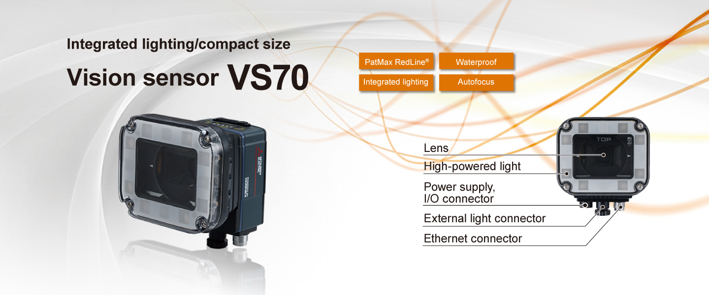

Vision Sensor Features Vision Sensor VS70


Autofocus module equipped*1
Autofocus module brings a camera into focus easily, reducing time for initial setting and set-up change. Even when installing the camera in a hard-to-reach space, it is easy to bring the camera into focus.
*1.Manual focus lenses are also available.
Water-proof/dust-proof
The product complies with IP67 rating, dust-proof and water-proof performance are assured.
Product lineup
Select products according to applications.
■Monochrome
| Item | VS70M-600 VS70M-600-□ |
VS70M-800 VS70M-800-□ |
VS70M-802 VS70M-802-□ |
|
|---|---|---|---|---|
| Image resolution (pixels) | 640 × 480 | ● | ● | — |
| 800 × 600 | ● | ● | — | |
| 1600 × 1200 | — | — | ● | |
| Maximum image acquisition speed | (frame/s) | When image resolution is set to 640 × 480: 217 When image resolution is set to 800 × 600: 165 |
53 | |
| Processor performance*2 | (times) | 1 | 1.25 | 1.25 |
| PatMax RedLine® | VS70M-□-R、VS70M-□-ER: supported VS70M-□、VS70M-□-E: not supported*3 |
|||
| EasyBuilder | ● | ● | ● | |
| Spreadsheet | VS70M-□、VS70M-□-R: supported VS70M-□-E、VS70M-□-ER: not supported*3 |
|||
■Color
| Item | VS70C-600-R | VS70C-800-R | VS70C-802-R | |
|---|---|---|---|---|
| Image resolution (pixels) | 640 × 480 | ● | ● | — |
| 800 × 600 | ● | ● | — | |
| 1600 × 1200 | — | — | ● | |
| Maximum image acquisition speed | (frame/s) | When image resolution is set to 640 × 480: 135 When image resolution is set to 800 × 600: 100 |
33 | |
| Processor performance*2 | (times) | 1 | 1.25 | 1.25 |
| PatMax RedLine® | Supported | |||
| EasyBuilder | ● | ● | ● | |
| Spreadsheet | Supported | |||
- *2.Magnification based on the VS70M-600-E
- *3.Please refer to Product list for details.
Working distance
The distance from a lens to an inspection target is referred to as "working distance", and an area where a vision sensor can see at that distance is referred to as "field of view".
Horizontal Field of View (640 × 480)
Horizontal Field of View (800 × 600)
Horizontal Field of View (1600 × 1200)